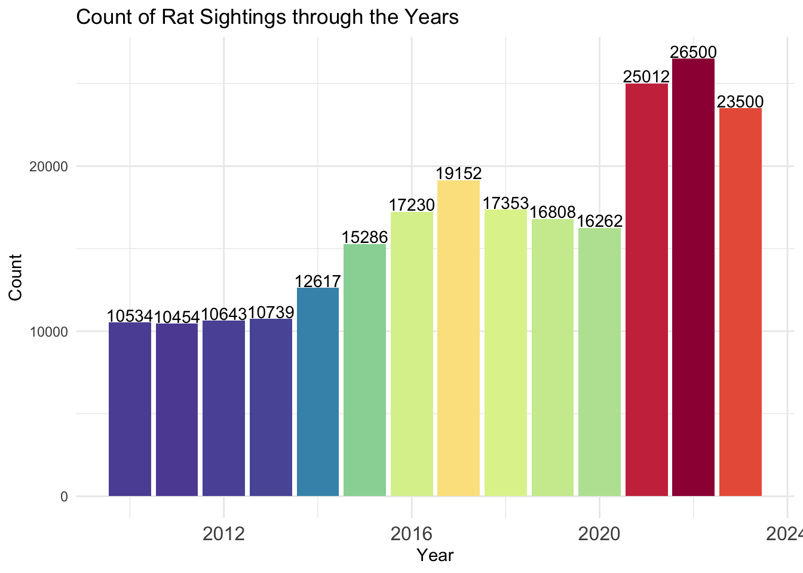
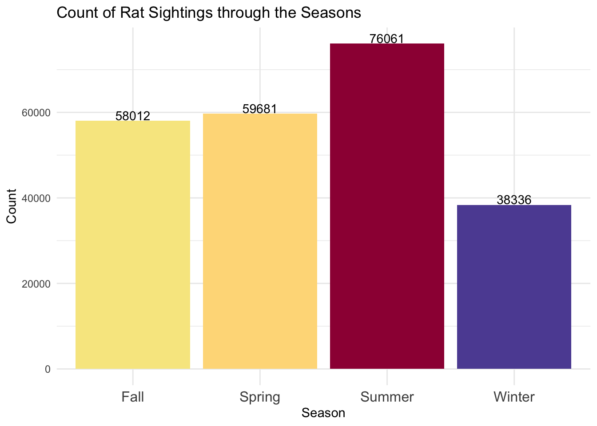

We first explored how rat sightings vary over time (month, day of the week, year) and how rat sightings vary by borough. To do so, we used simple tables, bar charts, line plots, heat maps, and interactive maps. First, we visualize rat sightings by different measures of time (year, month, and day of the week). Then, we visualize rat sightings by the different types of locations they are found at.
library(tidyverse)
library(lubridate)
library(readr)
library(xts)
library("RColorBrewer")
library("ggthemes")
library("gridExtra")
rats_raw <- read_csv("./Rat_Sightings.csv", na = c("", "NA", "N/A", "Unspecified")) %>%
janitor::clean_names() %>%
mutate(created_date = mdy_hms(created_date)) %>%
mutate(sighting_year = year(created_date),
sighting_month_num = month(created_date),
sighting_month = month(created_date, label = TRUE, abbr = FALSE),
sighting_day = day(created_date),
sighting_weekday = wday(created_date, label = TRUE, abbr = FALSE)) by_year <- rats_raw %>%
group_by(sighting_year) %>%
count() %>%
ggplot(aes(x = sighting_year, y = n, fill = n)) +
geom_histogram(stat = "identity", position = "dodge") +
theme(legend.position ='none',axis.title = element_text(),axis.text.x = element_text(size = 12)) +
xlab("Year") +
ylab("Count") +
geom_text(aes(label = n), vjust = -0.1, size = 3.75) +
ggtitle('Count of Rat Sightings through the Years') +
scale_fill_gradientn(name = '',colours = rev(brewer.pal(10,'Spectral')))
by_yearWe see a substantial increase in the number of rat sightings after 2020. This increase is consistent with the city of New York’s rat media coverage and the impact of the COVID-19 pandemic. With more restaurants closed and more restaurants offering outdoor dining, rats are more likely to scavenge outside. A warmer, wetter than usual summer in 2021 also contributed to favorable rat conditions.
by_month <- rats_raw %>%
group_by(sighting_month) %>%
count() %>%
ggplot(aes(x = sighting_month, y = n, fill = n)) +
geom_histogram(stat = "identity", position = "dodge") +
theme(legend.position ='none',axis.title = element_text(),axis.text.x = element_text(size = 9)) +
xlab("Month") +
ylab("Count") +
geom_text(aes(label = n), vjust = -0.1, size = 3.75) +
ggtitle('Count of Rat Sightings by Month') +
scale_fill_gradientn(name = '',colours = rev(brewer.pal(10,'Spectral')))
by_month
The most rat sightings are in the summer months with a peak in July. Sightings taper off in the fall, reaching a low in December, and then start to increase in the spring. Warmer weather is more favorable to rat survival and helps their populations grow.
by_day <- rats_raw %>%
group_by(sighting_weekday) %>%
count() %>%
ggplot(aes(x = sighting_weekday, y = n, fill = n)) +
geom_histogram(stat = "identity", position = "dodge") +
theme(legend.position ='none',axis.title = element_text(),axis.text.x = element_text(size = 12)) +
xlab("Weekday") +
ylab("Count") +
geom_text(aes(label = n), vjust = -0.1, size = 4) +
ggtitle('Count of Rat Sightings by Day of Week') +
scale_fill_gradientn(name = '',colours = rev(brewer.pal(10,'Spectral')))
by_dayWeekdays have the most rat sightings, peaking on Mondays and staying relatively high throughout the week, while weekends have much lower counts.
for_location_type <- rats_raw %>%
drop_na(location_type) %>%
filter(location_type != "Other (Explain Below)") %>%
group_by(location_type) %>%
mutate(count_loc = n()) %>%
ungroup() %>%
filter(location_type %in% c("3+ Family Apt. Building", "1-2 Family Dwelling", "3+ Family Mixed Use Building", "Commercial Building", "Vacant Lot", "Construction Site"))
ggplot(data = for_location_type, aes(x = fct_infreq(location_type))) +
geom_bar() +
theme_minimal() +
coord_flip() +
labs(title = "Top 6 Location Types for Sightings",
x = "Location Type",
y = "Count")
The above shows the top 6 location types for rat sightings. 3+ Family Apt. Buildings report the highest amount of rat sightings among all location types, while 1-2 Family Dwellings and 3+ Family Mixed Use Buildings report the next two highest amount of sightings. These location types are followed by commercial buildings, vacant lots, and construction sites.